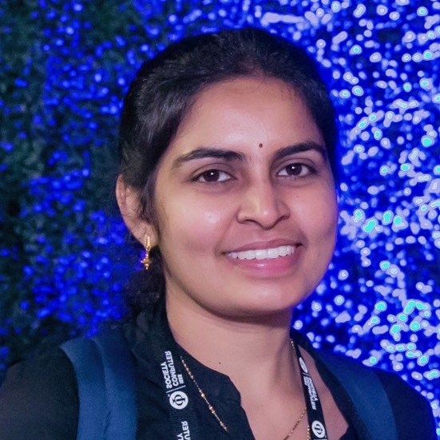
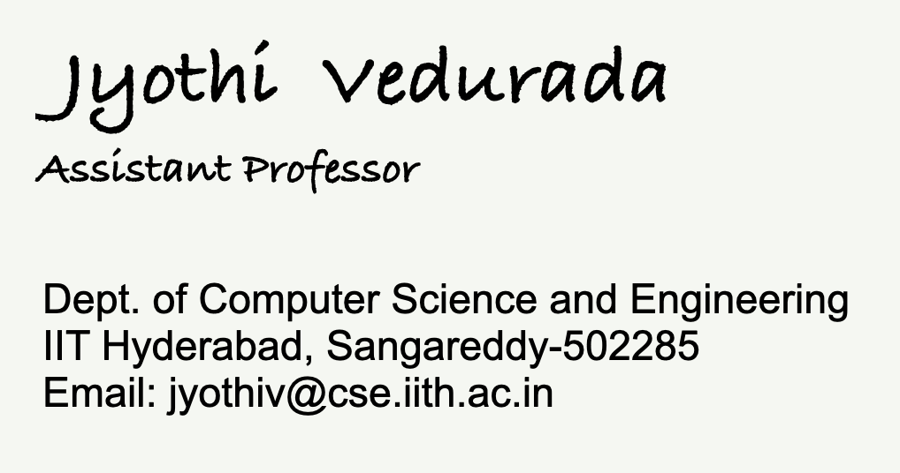

|  |  |
I am an assistant professor at the Dept. of Computer Science and Engineering, IIT Hyderabad. My research interests are compilers, program analysis, high-performance computing and software engineering. Prior to joining IIT Hyderabad, I was a post-doctoral researcher at Microsoft Research Lab, Bangalore. I received my PhD (+M.Tech) from IIT Madras, supported by the TCS PhD fellowship. Before that, I worked as a Software Engineer at Hewlett Packard, Chennai.
Institutional/Departmental Service
| • Soumik Kumar Basu | PhD | July 2021 - present |
| [Distinguished Artifact Award at ECOOP'25] [Best Paper Presentation Award at Indosys'25] [Paper in ECOOP'25 (Core Rank: A)] [Paper in TOPLAS'25 (Core Rank: A*)] [Patent(IN) 2025] | ||
| • Karthik V | PhD | July 2021 - present |
| [Paper in IEEE Transactions on Big Data 2025 (H-index: 35, Impact factor: 5.7–6.8)] | ||
| • Maruti Sairam Venkata Annaluru | PhD | January 2022 - present |
| • Ponnampalam Pirapuraj | PhD | July 2023 - present |
| [Paper in MSR'26 (Core Rank: A)] | ||
| • Uppalapu Bala Bhuvan Varma | PhD | July 2025 - present |
| • Siddhartha Neyagapula | MTech RA | July 2023 - present |
| • Chinmay Rajesh Ingle | MTech RA | July 2023 - present |
| [Reliance Foundation Scholarship] | ||
| • Shivendra Deshpande | MTech RA | July 2024 - present |
| [Reliance Foundation Scholarship] | ||
| • Deeba Afridi | MTech RA | July 2024 - present |
| • RAJAT MAHESHWARI | MTech RA | January 2025 - present |
| • Omkar Maroti Rasal | MTech RA | July 2025 - present |
| • Ankit Anil Dubey | MTech RA | July 2025 - present |
| • Punugubati Chaitanya Sai | MTech TA | May 2025 - present |
| • Tamal Mondal | MTech RA | July 2021 - June 2024 (now at Oracle) |
| [Kesav Nori Research Excellence Award] [Institute Appreciation in Research] [Silver Medal for Highest CGPA in MTech] [Paper in ASE'23 (Core Rank: A*)] [Paper in MSR'26 (Core Rank: A)] | ||
| • Raj Vilas Ambekar | MTech RA | May 2024 - June 2025 (now at ONIX) |
| • Saim Khan | MTech TA | May 2021 - June 2022 (now at Microsoft) |
| • Nandini Choudhary | MTech TA | May 2022 - June 2023 (now at DP World) |
| • Biswas Lilly Kumari | MTech TA | May 2024 - June 2025 (now at Morabu Hanshin in Japan) |
| BTech Mini Projects: Manoj Gayala (Aug-2021), Sharanya Gupta Shathavelli (Aug-2021, Jan-2022), Siddharth Singh Ahluwalia (Aug-2021), Rewant Raj (Aug-2021), Gubbala Sri Suraj (Jan-2022), Ojjas Tyagi (Aug-2022, Jan-2023), Aayush Patel (Aug-2022, Jan-2023), Jatin Kumar (Jan-2023), Rajiv Shailesh Chitale (Jan-2024), Rishit D (Jan-2024), Bhandare Vedant Tayappa (Jan-2024), Maharshi Kadeval (Jan-2024, Jul-2024), Varun Gupta (Jul-2024), Archit Vivek Ganvir (Jul-2024, Jan-2025), Kukkala Aashritha Reddy (Aug-2025, Jan-2026–present). | ||